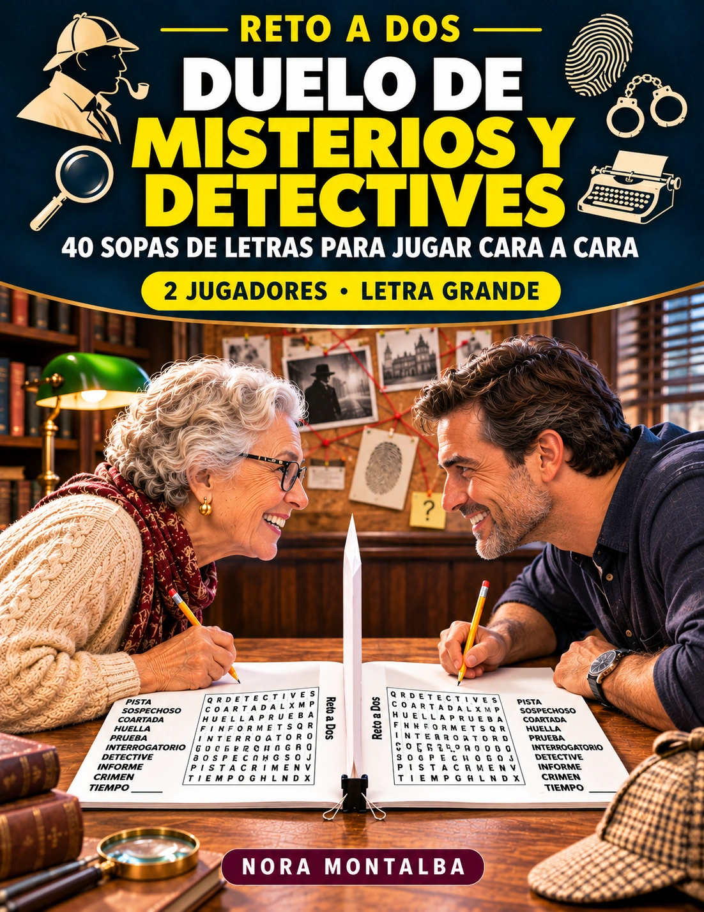
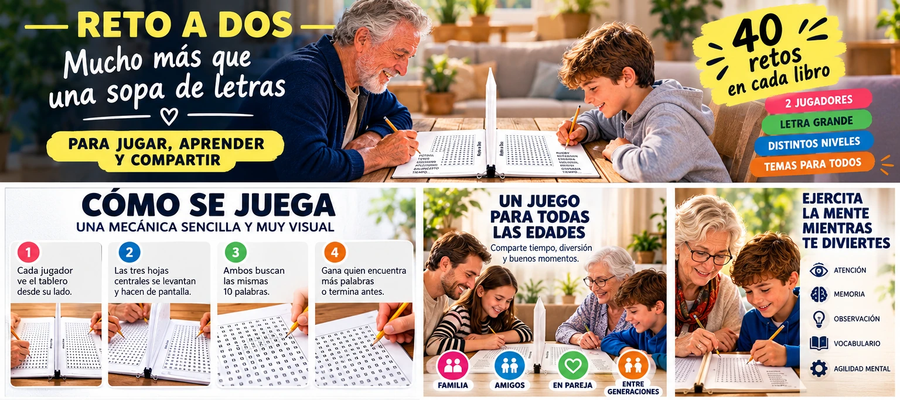

Duelo de Misterios y Detectives
Robos, enigmas, detectives y grandes misterios
¿Quién encuentra primero las pistas? Cuarenta partidas cara a cara para quienes disfrutan con los misterios y las investigaciones.
Dentro del libro
Cuarenta casos para jugar cara a cara.
Cuarenta sopas de letras dedicadas al mundo del misterio: investigaciones, robos, pistas, pasadizos, espionaje, detectives de ficción, escritores y ladrones célebres. Cada duelo enfrenta a dos jugadores con tableros idénticos y letra grande.
Para aficionados al misterio, familias, lectores de novelas policíacas, amigos y personas que disfrutan resolviendo enigmas.
- Autores y autoras
- Obras y personajes
- Géneros y recursos literarios
Así funciona
Abre. Separa.
Y empieza el duelo.
- 01
Colocad el libro
Se abre de lado sobre la mesa, justo entre los dos jugadores.
- 02
Formad la barrera
Separad y levantad tres hojas juntas. Sujetadlas con una pinza grande o con una mano para mantener la barrera recta.
- 03
Elegid cómo jugar
Podéis buscar las diez palabras ocultas sin saber cuáles son, o consultar las hojas de soluciones al final del libro, copiar esas palabras en los espacios laterales de cada tablero y después buscarlas con la lista a la vista.
- 04
Jugad a la vez
Cada persona ve su propio tablero. Gana quien completa antes el reto.

¿Preparados para jugar a Duelo de Misterios y Detectives?
 Duelo de Recuerdos
Duelo de Recuerdos